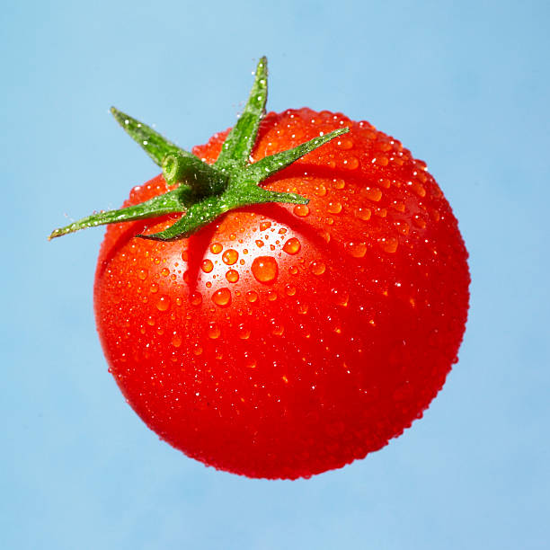
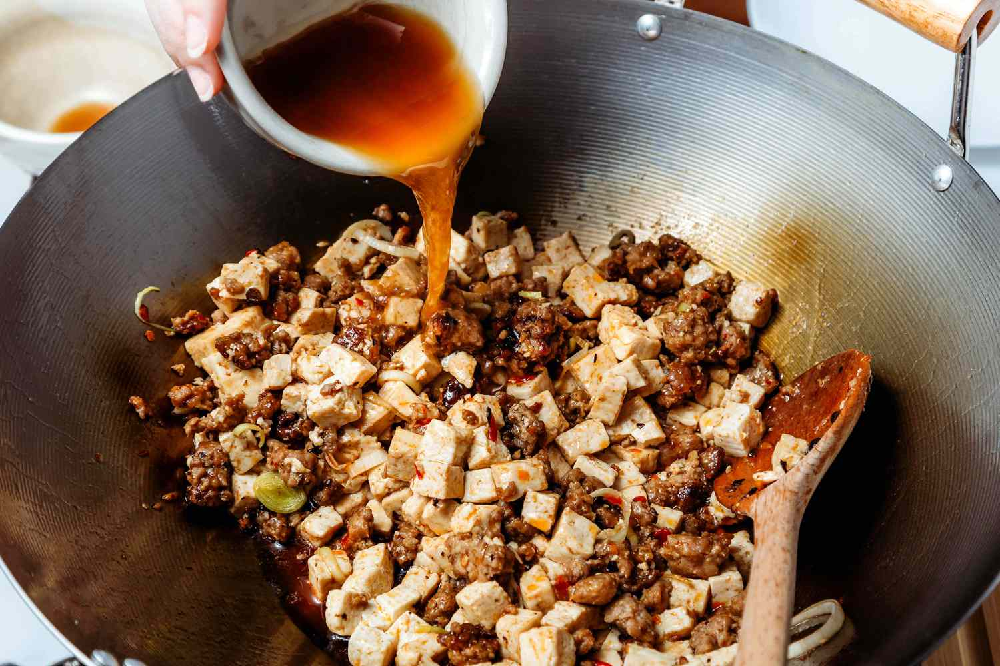
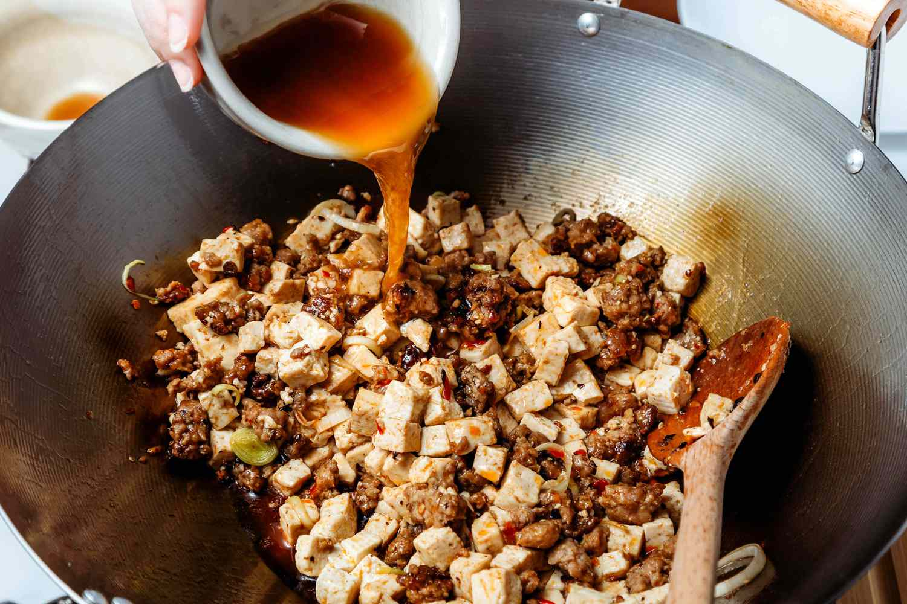

Tomato Basil Pasta
Origin: Italian Source: Online Category: Main Dish
This recipe is a fantastic way to step up your pasta game without taking too much more of your time. It tastes way better than basic pasta with jarred sauce! I originally found this when my sister made it, and got the recipe off of Bon Appetit's website. PS avoid using the shaker parmesan - I used that the first time I made this and it drew down the quality of the dish.
Recipe Ingredients
- Pasta
- Tomatoes (any larger than cherry)
- Basil
- Red wine vinegar
- Extra virgin olive oil
- Crushed red pepper
- finely grated block of parmesan
Recipe Steps
- cut tomatoes along equator
- squeeze juice and seeds out of tomatoes and discard
- cut juiced tomatoes into small-ish pieces
- smush down with large spoon to release some leftover juices
- add in vinegar, olive oil, crushed red pepper and half of parmesan
- let marinate for half an hour
- add basil
- Cook pasta
- toss marinade with cooked pasta and serve topped with remaining parmesan
Additional Food images


Sushi Bake
Origin: Asian Source: Own recipe Category: Main Dish
Do you want easy, quick way to enjoy sushi without having to do all of the work? Try to make our sushi bake, which takes 10 minutes to assemble and 20 minutes to bake in the oven. Our recipe feeds 8 people.
Recipe Ingredients
- 1 avocado
- 1/2 cup soon sauce
- 2 cups of rice
- 1 tablespoon of rice vinegar
- 3 tablespoons of mayo
- 1 8oz package of imitation crab
- 1 medium piece of salmon
- 1 cucumber
- 3 tablespoons of sriracha
Recipe Steps
- Preheat oven to 350 degrees
- Make rice. Mix rice vinegar into rice after it is cooked.
- Lay out all of the rice at the bottom of a large baking dish
- Lay out the imitation crab and cucumber on top of the rice
- Mix the imitation crab and 2 TBSP mayo into a crab salad
- Smear the crab salad onto the next layer
- Slice the avocado and lay those on the top of the dish
- Pour the rest of the mayo and sriracha on top
- Bake for 20 minutes
- Enjoy!
Additional Food images

Mapo Tofu
Origin: Chinese Source: Own recipe Category: Main Dish
Need something smooth and spicy? Mapo Tofu is a simple tofu dish from Sichuan China. It's great over rice and easy to prep/save for college students! This recipe is for people who want to try authentic Chinese food but do not have Sichuan spices to use.
Recipe Ingredients
- 1 pack silken tofu
- 2 green onions, thinly sliced
- 1/2 pound ground pork
- 1 pack mapo tofu sauce (store bought)
- 3 cloves minced garlic
- soy sauce to taste
- 2 tbsp cooking oil
Recipe Steps
- Brown pork in wok for 4-5 minutes
- Add sauce and garlic, stir fry for 2 minutes.
- Add tofu and mix lightly as to not break up the tofu too much, until heated through.
- Add soy sauce, green onion and dish up
Additional Food images
 
